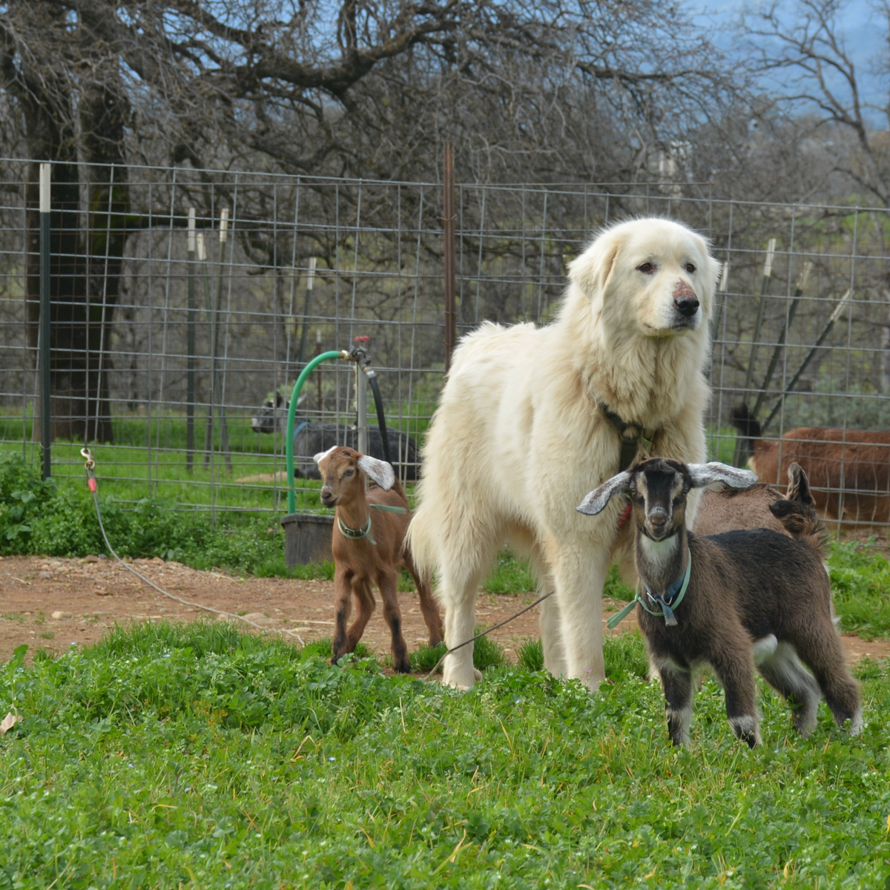

Reserve Your Spring Kids
Our baby goats are raised with care and personality. Reach out to ask about availability and pickup.
✉ Contact Us →Friendly • Dual-purpose • Perfect homestead goats
Our baby goats are raised with care and personality. Reach out to ask about availability and pickup.
✉ Contact Us →
Our goats are protected and raised alongside a Maremma livestock guardian dog, helping keep the herd calm, safe, and well-adjusted.